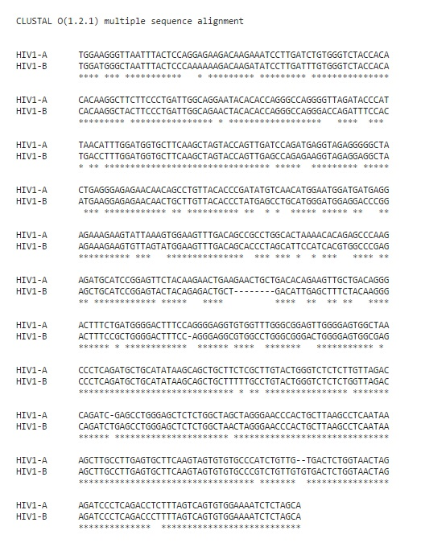
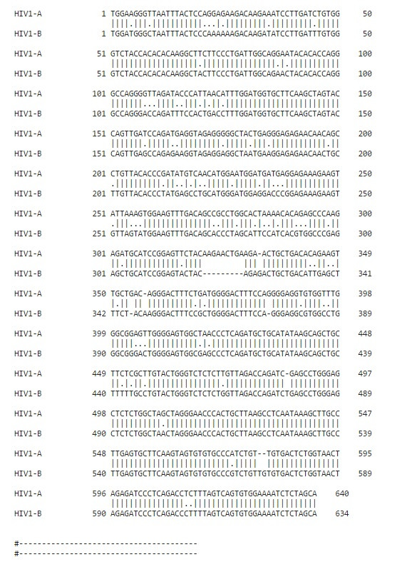
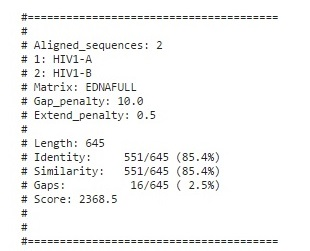

Motivation
Aligning nucleotide or amino acid sequences is a very common procedure in HIV computational analysis. An accurate alignment is the first step in making a proper and correct analysis of HIV datasets. Sequence alignments are essential for phylogenetic analysis tracing the epidemiology of HIV, but also for interpretations of drug resistance and data mining efforts, where correctly positioning nucleotides or amino acids of different strains with respect to each other is pivotal.
Objective
The strains of HIV-1 can be classified into three groups: the "major" group M, the "outlier"
group O and
the "new" group N. More than 90% of HIV-1 infections belong to HIV-1 group M. Group M there are
known to be at least nine genetically distinct subtypes (or clades) of HIV-1. These are subtypes A, B, C, D,
F, G, H, J and K.
Our objective here is to compare HIV-1 A and HIV-1 B virus by determining the similarity
between
the
two.
Method
We selected two sequence of HIV-1 virus, A and B from HIV Sequence Database.
TGGAAGGGTTAATTTACTCCAGGAGAAGACAAGAAATCCTTGATCTGTGGGTCTACCACACACAAGGCTTCTTCCCTGATTGGCAGGAATACACACCAGGGCCAGGGGTTAGATACCCATTAACATTTGGATGGTGCTTCAAGCTAGTACCAGTTGATCCAGATGAGGTAGAGGGGGCTACTGAGGGAGAGAACAACAGCCTGTTACACCCGATATGTCAACATGGAATGGATGATGAGGAGAAAGAAGTATTAAAGTGGAAGTTTGACAGCCGCCTGGCACTAAAACACAGAGCCCAAGAGATGCATCCGGAGTTCTACAAGAACTGAAGAACTGCTGACACAGAAGTTGCTGACAGGGACTTTCTGATGGGGACTTTCCAGGGGAGGTGTGGTTTGGGCGGAGTTGGGGAGTGGCTAACCCTCAGATGCTGCATATAAGCAGCTGCTTCTCGCTTGTACTGGGTCTCTCTTGTTAGACCAGATCGAGCCTGGGAGCTCTCTGGCTAGCTAGGGAACCCACTGCTTAAGCCTCAATAAAGCTTGCCTTGAGTGCTTCAAGTAGTGTGTGCCCATCTGTTGTGACTCTGGTAACTAGAGATCCCTCAGACCTCTTTAGTCAGTGTGGAAAATCTCTAGCA
TGGATGGGCTAATTTACTCCCAAAAAAGACAAGATATCCTTGATTTGTGGGTCTACCACACACAAGGCTACTTCCCTGATTGGCAGAACTACACACCAGGGCCAGGGACCAGATTTCCACTGACCTTTGGATGGTGCTTCAAGCTAGTACCAGTTGAGCCAGAGAAGGTAGAGGAGGCTAATGAAGGAGAGAACAACTGCTTGTTACACCCTATGAGCCTGCATGGGATGGAGGACCCGGAGAAAGAAGTGTTAGTATGGAAGTTTGACAGCACCCTAGCATTCCATCACGTGGCCCGAGAGCTGCATCCGGAGTACTACAGAGACTGCTGACATTGAGCTTTCTACAAGGGACTTTCCGCTGGGGACTTTCCAGGGAGGCGTGGCCTGGGCGGGACTGGGGAGTGGCGAGCCCTCAGATGCTGCATATAAGCAGCTGCTTTTTGCCTGTACTGGGTCTCTCTGGTTAGACCAGATCTGAGCCTGGGAGCTCTCTGGCTAACTAGGGAACCCACTGCTTAAGCCTCAATAAAGCTTGCCTTGAGTGCTTCAAGTAGTGTGTGCCCGTCTGTTGTGTGACTCTGGTAACTAGAGATCCCTCAGACCCTTTTAGTCAGTGTGGAAAATCTCTAGCA
We compared the DNA strands of HIV-1A and HIV-1B using two different techniques –
Tool : Cluster Omega
Output
Sequence Alignment using cluster omega
| Gaps | 12 |
| Mismatches | 87 |
| Similarity | 544 |
Tool : Needle
Output
Pairwise Alignment using needle
 Conclusion
Even though HIV1A and B originate from different regions viz. Subtype A is common in West Africa while Subtype B is the dominant form in Europe, the Americas, Japan, Thailand, and Australia, The sequence alignment results show a similarity of 85-86% position with 12-16 gaps and ~82-87 mismatches.
Bibliography
- Sequence Alignment in HIV Computational Analysis [ http://www.hiv.lanl.gov/content/sequence/HIV/COMPENDIUM/2006_7/abecasis.pdf ]
- BFCounter Software [ https://github.com/pmelsted/BFCounter/ ]
Contributors

An Exact Algorithm to Compute the DCJ Distance for Genomes with Duplicate Genes
Mingfu Shao, Yu Lin, and Bernard Moret
Laboratory for Computational Biology and Bioinformatics, EPFL, Lausanne, Switzerland
Department of Computer Science and Engineering, University of California, San Diego,
La Jolla, California
{mingfu.shao,yu.lin,bernard.moret}@epfl.ch
Department of Computer Science and Engineering, University of California, San Diego, La Jolla, California
{mingfu.shao,yu.lin,bernard.moret}@epfl.ch
The double-cut-and-join (DCJ) model has been used to calculate edit distance between two genomes for quite a long time. Optimizing edit distance problem forms an integral part to solve basic problems for genome evolution. Shao, Lin, and Moret proposes an Integer Linear Programming approach to tackle a specific case of genomes i.e. genomes with duplicate genes. This problem can be solved in linear time for genomes without duplicate genes but has been proved NP-Hard for genomes with duplicate genes by a reduction from NP-Hard problem of Breakpoint Graph Decomposition.
The authors define this problem as to find a valid bijection between two genomes with duplicate gene content that minimizes the DCJ distance between them. When there is a consistent decomposition with c cycles and o odd-length paths, DCJ operations needed to transform genome G1 to G2 is given by (|V|/4 − c − o/2). Hence to minimize total DCJ operations, maximize (c + o/2) over the space of all consistent decompositions. This reduces the problem to maximum cycle decomposition problem which is further formulated as an Integer Linear Program. The ILP formulation has O|E| variables, O|E| constraints and maximizes the number of cycles.
Authors have devised a preprocessing algorithm to reduce complexity while preserving optimality of DCJ distance computing algorithm. The combined approach is crucial for comparing genomes with duplicate genes as they are commonly observed in most species.
Authors claim a bold assumption that after a speciation event, only DCJ operations are involved. This is unrealistic and is only used to simplify the problem.